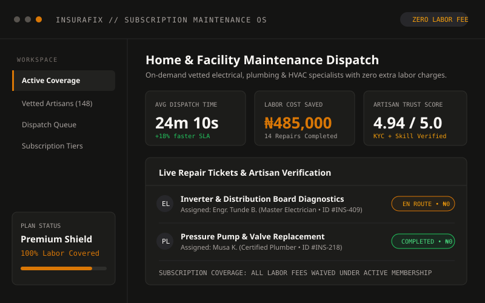

Insurafix
A subscription-based repair and maintenance platform that gives residential and commercial users access to vetted artisans and technical professionals on a strict "no extra labor cost" basis. Includes KYC-verified artisan dispatch, SLA tracking, and transparent parts-only invoicing.
- Product Strategy
- React & Next.js
- TypeScript
- PostgreSQL
- Figma